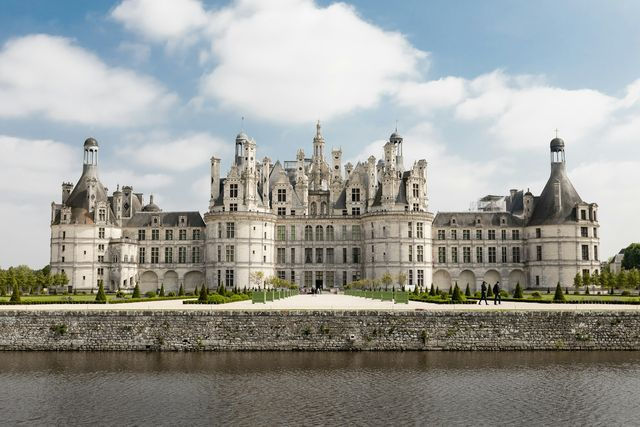
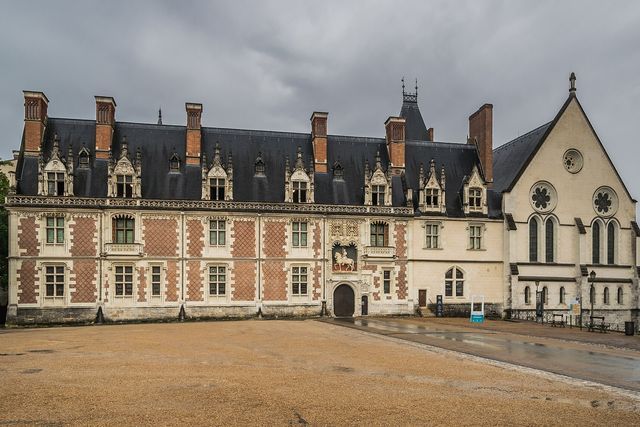
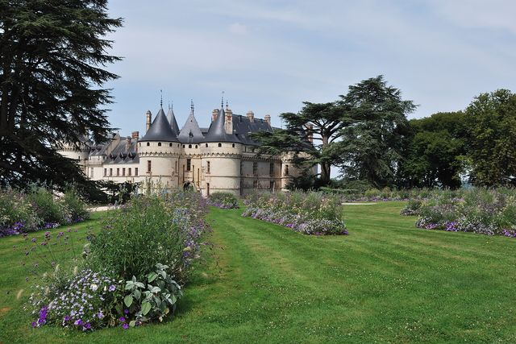

Visiting the Loire Valley châteaux
Chambord, Chenonceau, Amboise and Villandry: the great Renaissance châteaux, two hours from Paris.
Photo: Colin Watts / Unsplash
The Loire Valley, a Unesco World Heritage site, is home to the finest Renaissance châteaux: Chambord, the largest, Chenonceau built across the Cher, Amboise and Leonardo da Vinci’s Clos Lucé, and Villandry with its gardens. Tours, Amboise and Blois are 1 to 2 hours from Paris by train.
In winter most châteaux stay open and put up Christmas decorations from late November to early January. Each guide gives opening hours, 2026 prices, access and our tips.
The Loire châteaux at a glance
| Château | 2026 adult ticket | Don’t miss |
|---|---|---|
| Chambord | €21 (EEA residents), €31 (others) | The double-helix staircase, the rooftop terraces |
| Chenonceau | €15 (€19 with audio guide) | The gallery spanning the Cher |
| Amboise | €17.50; Clos Lucé €20 | Leonardo da Vinci’s tomb |
| Villandry | €14 (gardens only €8.50) | The ornamental kitchen garden |
| Chaumont-sur-Loire | Depends on season | Christmas “Rêves d’antan” until 10 January 2027 |
| Cheverny | Depends on ticket | Open every day, even 25 December and 1 January |
| Blois | Depends on ticket | François I staircase, the sound and light show |
Prices taken from the official websites for 2026; each guide lists reduced rates and opening hours.
How many days?
On a day trip from Paris, pick one area: Amboise and Chenonceau from Tours, or Chambord, Blois and Cheverny around Blois. With two or three days you can combine both areas and add Villandry. Amboise is about 2 hours from Paris by train, and Chenonceaux station is a few minutes’ walk from the château; Chambord needs a car or the shuttle from Blois.
What to see in the Loire Valley
-

The largest château in the Loire, with its double-helix staircase and roof terraces.
-

The château built on arches over the Cher, its grand gallery and Diane’s garden.
-

The royal château where Leonardo da Vinci is buried and Clos Lucé, his last home.
-

The finest gardens in the Loire: kitchen garden, clipped box hedges and a maze.
-

Four centuries of architecture around one courtyard, François I’s staircase and the sound and light show.
-

A Classical château still lived in, the model for Tintin’s Marlinspike Hall.
-

A château above the Loire and the International Garden Festival.